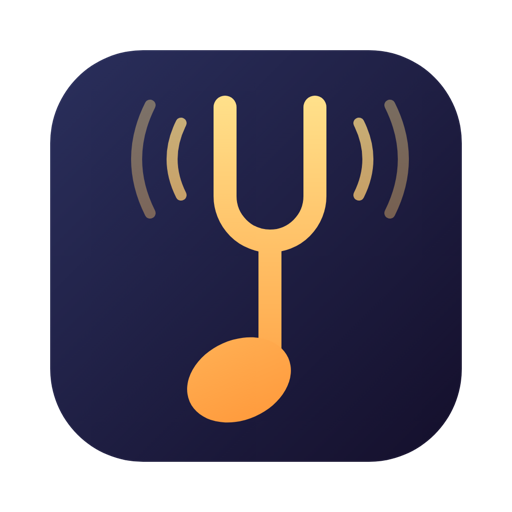

PitchTap
Change the pitch of any song
on your Mac. Same tempo.
Live pitch shifting for Spotify, Apple Music,
YouTube or your whole Mac. From the menu bar.
Free · Open source · macOS 14.4+ · Apple silicon

Live pitch shifting for Spotify, Apple Music,
YouTube or your whole Mac. From the menu bar.